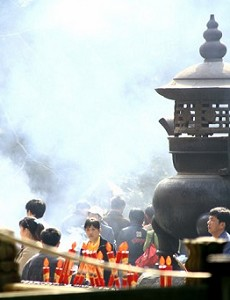
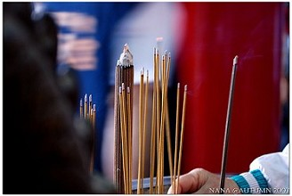
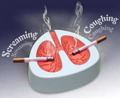
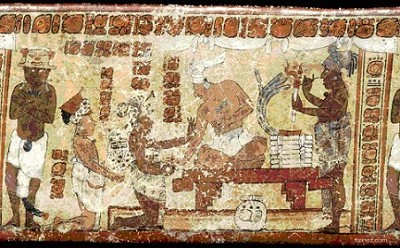
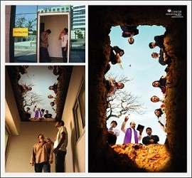
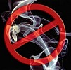

焚香与吸烟
冯冯
庙宇的巨大香炉经常插满香枝，弄得浓烟窜冒，弥漫满堂，乍看误为火灾，又似火烧垃圾堆，浓烟滚滚，呛人欲晕。一般庙宇，类皆如此，香客信徒，无不焚点大把香枝，以之拜神敬佛，以为香枝愈多，愈表虔心，焚烧香烛愈多，愈能得到神佛保佑。
焚香愈多，是否就蒙神佛保佑呢？其实，人间的清官不贪图供养，天上的正佛正神更不贪图供养，正佛正神是否保佑你，要看你的心地是否善良，所求动机是否正当合理，看你是否积有善因，绝不会因为你多烧香就曲护你。假如有人心存不良，祈求神佛保佑他打劫银行成功，那他焚香一吨，也不可能获得神佛保佑，假如有人祈求佛佑他的患病父母平安，虽不焚香，也会心动神知，必得神佛垂怜加持。
正佛正神不贪供养，你焚 香太多，浓烟滚滚，香气太浓，可能反而把佛薰跑了呢。这不算是危言耸听，因为正佛正神是清净的，不会喜欢俗香薰他。俗香的香气，实在难以忍受，有些浓重到可做五更迷魂香，叫你昏迷，有些令你呼吸困难，乃至于窒息，常有人在庙堂昏倒，要打电话叫十字车，有人在庙堂心脏病突发，甚至猝然死亡。
为什么？因为俗香的成份有问题。参观过香烛制造工厂，就知道，香枝的基本材料，是化学香料、泥土、动物油脂，特别是用猪油。在某些边彊，是用犁牛的油脂或羊油，再加工一些木糠，例如樟木的木糠、松香等等材料，绞碎了，拌匀了，滚在竹枝上，予以晒干或焙干，就成为香枝或卧香。许多香厂广告号称使用真正檀香木，其实，原产地夏威夷大岛，已经伐尽，再无檀香木 出产，高价亦难求。一般厂商却采用代用品人造檀香粉，那是化学药剂的芬芳药品，或者采用其他有香味的树木，例如：松、、彬、柳、樟等等的木糠，它 必需有木糠，拌以动物油，才可燃烧良好及长久，缺一不可！
这些香枝，燃烧发生的烟，所含的化学成份，以二氧化碳及一氧化碳为主，还有它的多种芳香化学成份，呼吸多量，就会晕眩，甚至引起血液中毒于一氧化碳，引致窒息及心脏衰竭而死亡，在密闭门窗的情况之下，最是危险。
住庙的人，很多患上肺癌肝癌，可能就是每天吸入太多的焚香烟雾所致。焚烧香枝，产生的毒素，可能与吸烟的毒素相近。每天吸烟几支，它的毒素，已经足以致癌。庙宇焚香如林，烟雾薰天，何只数万倍于香烟（烟仔）或雪茄？可惜无人致力研究庙宇焚香的毒素，提出警告，本文作者可能是头一个提出此种警告的吧？作者并无用仪器分析焚香的化学成份。但是，凭常识也知焚 香必定放出大量的二氧化碳与一氧化碳，前者使人头痛头晕，后者更夺取血液中的氧，使人不知不觉死亡。关闭的汽车内产生的一氧化碳CO都足以杀人，何况庙宇的浓烟滚滚，冲天弥漫？大香炉若非露天，危险就不堪设想了。
 烟仔与雪茄，是用烟草焙制而已，制作也加入一些化学药剂，它的燃烧，会产生很多毒素。所谓ＡＢＣＤＥＦＧＮＴ毒素，分列如下：每一字母是毒素的缩写。
Ａ──ARSENIC 砷，又名砒霜
Ｂ──ＢＥＮＺＹＬ 甲醇
Ｃ──ＣＡＲＢＯＮ ＭＯＮＯＸＩＤE 一氧化碳
ＣＡＲＢＯＮ. ＤＩＯＸＩＤＥ 二氧化碳
Ｄ──ＤＥＰＨＥＮYＬ 联苯
Ｅ──ＥＴＨYＬ 乙基
Ｆ──ＦＯＲＭＡＬＤＥＨＹＤＥ 甲醛
Ｇ──ＧＹＰＳＯＭ 石灰
Ｎ──ＮＩＣＯＴＩＮＥ 尼古丁烟碱酸
Ｔ──ＴＡＲ 油沥青
以上是从美国与加拿大电 视上看到政府卫生部劝告所列出抽烟之毒素，笔录可能有误或疏漏。该劝告影片映出，死于肺癌的病人，肺脏都变成了黑色腐烂一团，心胸大动脉（ＡＯＲＴＡ）可以挤出一团又黑又黄的油脂，肝脏也都溃烂了，心脏的冠状动脉（ＣＯＲＯＮＡＲＹ ＡＲＴＥＲＹ）也淤塞了，十分可怖，惨不忍睹，可是还是有人不怕死，仍爱抽烟，说：佛陀没有叫人戒烟呀。
是，佛陀只叫人戒酒，并无叫人戒烟，为什么？
很简单，因为在佛陀时代，尚未有香烟，人民未识抽烟，烟草是美洲土人在一千四百年前才发现的，他们开始用吸烟来治病，当作药草，后来才演变为嗜好，后来才由商人传入欧洲与印度，另外也传入中国，大约是晋代（东晋），“抱朴子”一书记载还有人吸烟，人以为异。可见中国人本来不识抽烟，现代就普及了，人手一支烟，没钱买米也得买烟。“饭后一支烟，快活似神仙”，见面就敬烟，是一项礼貌，谈生意，无烟怎谈得成？上厕所大便，更需吸烟辟臭，写文章，无烟那有灵感？吸烟已经成为风尚，不只男子嗜烟，女子亦迎头赶上，愈来愈多女子抽烟，也多青少年抽烟，这些吸烟者，将来迟早都会成为心脏梗塞、肺癌、肝癌的枉死鬼，真是可怜！
学佛者抽烟的人不少，几 位著名佛学大家都是烟枪，死于肺癌，他们说佛陀未叫人戒烟，所以可以抽烟。殊不知，佛陀在世之时，尚未有人抽烟，若有，也可能是吸印度大麻烟（MARIUANA），而不是烟草（TABACO）。所 以佛陀未设此戒。大麻，在古代印度也是用作医疗的，不是嗜好。淡巴菇烟草，源起于中美洲的淡巴菇岛，以地为名，是哥伦布发现新大陆以后，带烟草回欧洲的。时在一四一八年左右，佛陀在二千六百年前，怎会叫人戒烟？不过，不能说佛未戒烟，就可以抽烟，抽上了瘾，做一辈子烟奴，最后死于癌症，何苦来哉？当然，不吸烟者，也有人患上肺癌肝癌，其中其实不少是由 于吸入了“二手烟”，自已不吸烟，可是吸入了别人喷出的“二手烟”太多，也会中毒，就有一个太太，自已不吸烟，丈夫吸烟，她终于死于肺癌。很多人在夜总会酒吧餐馆做工，自己不吸烟，却吸入了太多二手烟，也因此死于肺癌。加拿大政府卫生部现在下令禁止在公共场所抽烟，包括酒吧餐馆在内，用意是保护公众，免受 二手烟之毒害，但是也引起很强烈的烟客反感，说是妨碍了“个人自由”。酒吧说不准吸烟，损失了很多顾客，生意清淡，只好“炒鱿鱼”伙记，争论未定，各有立场，若从保健角度来看，禁烟是明智之举。  吸烟之害，是众所皆知，庙宇道场大批焚香，却无人注意，其实，庙宇焚香之众多，何只数十万支烟仔？
原始佛教，在佛陀时代， 敬佛上供鲜花清水与生果，从不焚香。后世才兴行焚香，其实，焚香本非佛教仪式，而是外道，不信，请多查看佛经。焚香大盛于中国与西藏，由来已久，源起于原始民族祭祀鬼神，后来同化了佛教。
一点心香透天庭，何须焚香，信佛学佛行佛法，何须焚香？
原载《佛网》网站
2000 年 ── 2002 年